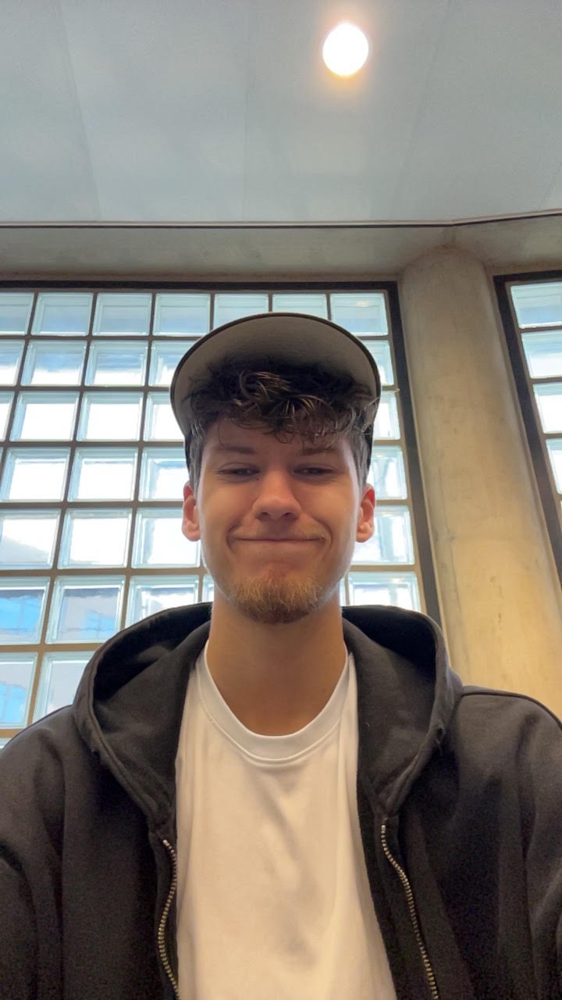

Leo Gordijn
Webdeveloper in opleiding

Over mij
Ik ben Leo Gordijn, 20 jaar oud en student HBO-ICT aan De Haagse Hogeschool. Binnen mijn opleiding ben ik bezig met webdevelopment en leer ik onder andere werken met HTML, CSS, JavaScript, C# en databases.
Wat ik leuk vind aan programmeren is dat je vanuit een idee stap voor stap iets werkends kunt maken. Ik ben nog volop bezig met het leren van verschillende technieken en probeer tijdens opdrachten steeds beter te begrijpen waarom bepaalde oplossingen worden gebruikt in plaats van alleen code werkend te krijgen.
Buiten mijn opleiding ben ik veel bezig met voetbal. Ik voetbal zelf bij voetbalclub SV Nootdorp en ben supporter van ADO Den Haag en Liverpool. Daarnaast werk ik bij restaurant Puurr aan de vliet in de keuken.
Wat ik leer
Tijdens mijn opleiding werk ik met verschillende programmeertalen en technieken.
Contact
Wil je contact met mij opnemen of meer van mijn werk bekijken? Je kunt mij bereiken via:
- E-mail: 25150952@student.hhs.nl